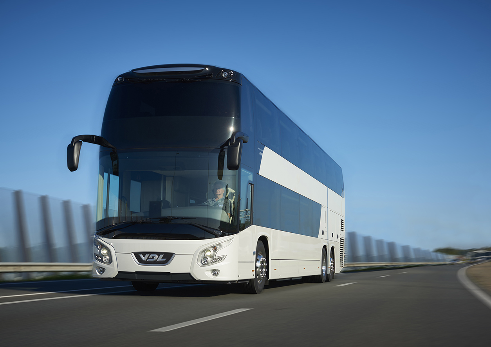

Getting to Sitges - By Bus, Taxi and Train
There are various options for getting to Sitges from the city of Barcelona. If you are travelling in the day, you are most likely to wish to travel by train - the cheapest and quickest option.
However, the bus is nearly as cheap and nearly as fast (see below for prices and times) and a night bus option means that it is available twenty-four hours.
Nearest Airport to Sitges:
Barcelona Airport - El Prat (BCN)
Getting to Sitges from Barcelona by Train
 There are three main train stations in Barcelona that offer a service that runs to Sitges:
There are three main train stations in Barcelona that offer a service that runs to Sitges:
The C2 train travels from Estació de Franca to Passeig de Gràcia to Sants and then on to Sitges. The final destination of the train is either Vilanova i la Geltru or St. Vincenç de Calders - these are the names that you should be searching for on departure boards and on the front of the train rather than Sitges.
Price of the Train Ticket
Train tickets can be purchased either from automated machines or from ticket desks - you will normally find that it is quicker to use the machines.
- Single Journey: €4.10
- Return Journey: €7.20
Train times from Barcelona to Sitges
Trains to Sitges from Barcelona run approximately every twenty minutes. The journey lasts 46 minutes from Estació de França, 37 minutes from Passeig de Gràcia and 30 minutes from Estació Sants. Train times are subject to change - it is therefore best to check the Official Renfe website for more details
Train from Barcelona to Sitges
Operating hours: 06:47 - 19:37
Getting to Sitges from Barcelona by Bus
 Buses to Sitges from Barcelona leave from Plaça España and Ronda Universitat during the day. They are run by a bus company called MonBus. The journey from Ronda Universitat to Sitges takes 55 minutes and from Plaça España it takes 45 minutes - although this can be longer at weekends, as the bus makes more stops.
Night Bus
The Nightbuses are under a different name - they are not called MonBus and are simply given numbers N30, N31 or N32. They run from Plaça de Catalunya rather than Ronda Universitat or Plaça España. The night bus journey is shorter as it goes directly from Barcelona to Sitges, with the journey time lasting 35 minutes.
Bus fares - Barcelona to Sitges
- Single Journey: €4.10 (purchased on the bus)
Bus Schedule
The MonBus runs twice per hour from Monday to Friday during the day. On Saturdays the bus runs every hour. On Sundays and Holidays they run nine times per day. The night bus runs four times per hour.
Night Bus
Operating hours: 00:55 - 05:51
For details of the times of the MonBus check the MonBus Website. Go to the 'Timetable Searcher' and key in 'Aeroport' to 'Sitges'. The times provided will be either for Monday - Friday, Saturdays, Sundays or Nighttime. It is important to check this as it may be subject to change.
Getting to Sitges from Barcelona by Taxi
Sitges is located approximately 42 km south of Barcelona. A taxi journey will take about 40 minutes.
- Taxi fare: €75.00 - €85.00
If you would like driving instructions on how to get from Barcelona to Sitges, see the "Guide to Getting to Sitges, from Barcelona by Car."
There are numerous cheap and convenient options for getting from Barcelona to Sitges. On arrival in Sitges, whether by bus or by train, you will find yourself less than ten minutes walk from the beach. If you plan in advance, it will help you to figure out the option that is likely to prove most convenient to you.